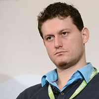
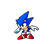

game UNI ™

Какво ми се играеee?

Наков
Наков обича тайничко да играе на Super Sonic. Той смята, че е много добър! Явно е така, защото и самият Соник мисли така.
Наков обича да играе и на танкчета. Там е непобедим! Любимото му ниво е това, в което може да бронира своята база и вечно притежава брониран щит!